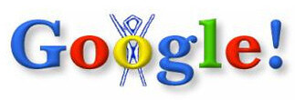

<!DOCTYPE html>
<html lang="pt-BR"></html>
<head>
    <meta charset="UTF-8">
    <meta http-equiv="X-UA-Compatible" content="IE=edge">
    <meta name="viewport" content="width=device-width, initial-scale=1.0">
    <title>Nascimento do Google</title>
    <!-- STYLE SHEETS -->
    <link rel="stylesheet" href="google.css">
    <link rel="stylesheet" href="reset.css">
    <link rel="shortcut icon" href="images/favicon.png" type="image/x-icon">
</head>
<body>
    <!-- Banner Geral -->
<header class="banner"></header><br>

<!-- Botões de Navegação  -->
<nav>
    <a href="index.html">Home</a> 
    <a href="escritorio.html">Escritório </a> 
    <a href="filosofia.html">Filosofia </a> 
</nav>

<main> 
    <div class="divs">
    <h1>Como o Google nasceu?</h1><br>
    
    <p>A ideia era criar um sistema de pesquisa que usasse links para avaliar  a importância de páginas na Internet. <br>A palavra Google vem da estilização da palavra Googol que é uma expressão matemática: basicamente o número 1 seguido de 100 zeros. Ecolheram este nome para passar a ideia de movimentação de quantidades massivas de informação. Escolha certa, hein? </p>
    <p>O primeiro <a href="https://www.google.com/doodles?hl=pt-BR" target="_blank"><span>doodle</span></a> do Google de 1998. O primeiro doodle foi feito para avisar aos usuários que não havia ninguém no "escritório" naquele momento e não poderiam arrumar eventuais problemas e crashes dos usuários,na verdade os dois tinham ido ao <a href="https://burningman.org/" target="_blank"><span>Burning Man Festival</span></a> em Nevada nos Estados Unidos.</p>
    </div>
</main>                   
<footer>
    <p>Leandro Correia</p>
</footer>
    
</body>
</html>


